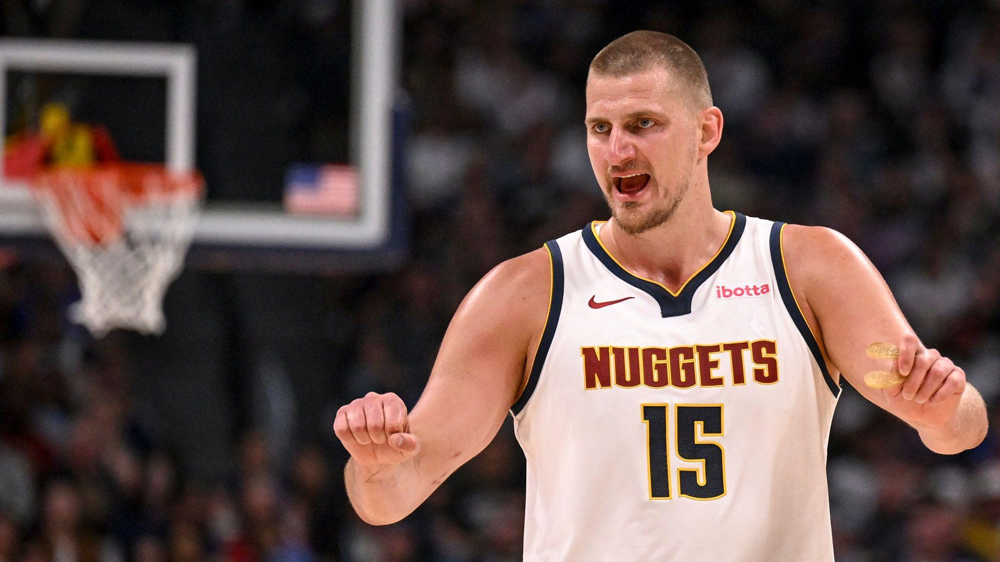
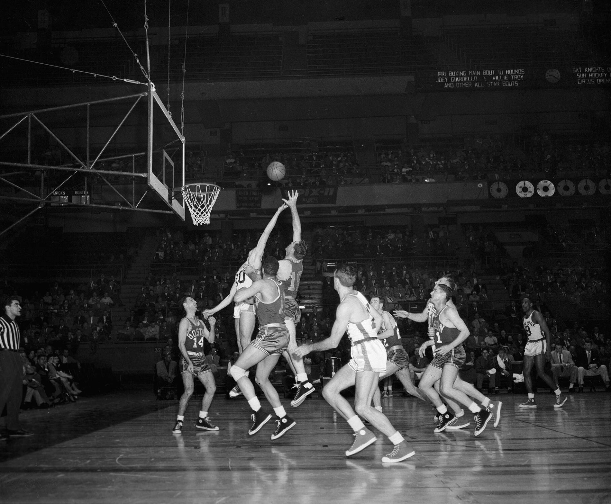

Nikola Jokic.
El entrenador de los Nuggets es, después de todo el escándalo, David Adelman (43 años, 10 menor que su predecesor), que era asistente de Malone y que tiene una excepcional reputación que le ha hecho sonar para ocuparse de varios banquillos en los dos últimos años, aunque su oportunidad no ha llegado hasta ahora. Es el hijo de una leyenda de los banquillos como Rick Adelman y tendrá la difícil misión de focalizar a sus jugadores para que se olviden de lo ocurrido y poder salir indemne del espectacular atasco que hay en el Oeste.
 